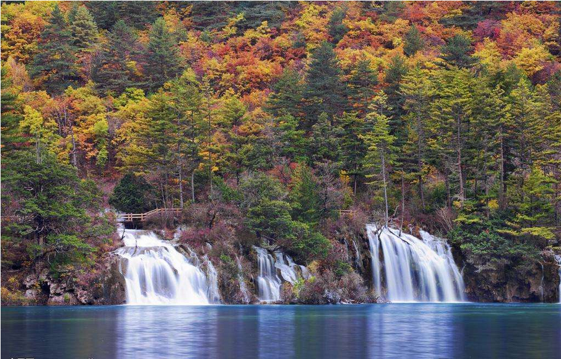

对当地政府、景区管理方来说，景区恢复开放得虑及生态恢复进度；对民众而言，想领略仙境不妨等等。
“九寨归来不看水”，一朝地震满丘墟。据新京报报道，曾经五彩瑰丽的九寨沟景区，被8月8日晚间那场地震打翻了“颜料盒”，原本斑斓的色彩，变得一片灰暗、浑浊和狼藉。尤其让人叹息的，是火花海、诺日朗瀑布（老版《西游记》曾在此取景）两大重要景点损坏严重，几乎“消失”。
地震不仁，从美如仙境到满是疮痍，只花了几十秒。像火花海和诺日朗瀑布，都是“造化钟神秀”，孕毓不只几千年（诺日朗形成时间至少数万年），而今却近乎被毁于一旦，实在令人惋惜。去过这两个景点的人或许会“痛其失”，而没去过的人则普遍遗憾还没去过，毕竟今后这两个景点能否一如当初，还很难说。
网上很多人担心有些景点“一旦错过就不在”，讨论该不该对震后受损景点人工修复。就目前看，学界专家倾向于以自然修复为主：九寨沟景色形成属于自然地理演化过程，有些决口或漏点固然可以进行人工修补，道路系统、旅游接待系统等也可适度修复，但生态恢复则要看“天”。

受损景区恢复，没法“一键修复”、一蹴而就，还得尊重自然规律。无论是当地政府、景区管理者还是社会大众，对此都应有起码的预估。在九寨沟景区对外开放摁下“暂停键”之后，要有给其自然修复的时间。
九寨沟是旅游胜地，当地财政收入也形成了“旅游依赖”。景区进入恢复期，意味着很大一部分财政收入来源被切断，有些民众生活也面临“断炊”风险。
饶是如此，景区修复也得敬畏自然，尊重自然规律。对当地政府、景区管理方来说，也得抑制住“靠景吃景”的冲动，有些该“慢慢来”的急不得，对于什么时候能恢复开放，要持长线眼光、作长远打算，其规划也要和重建及生态恢复的进度统筹考虑。
于民众而言，同样“急不得”，就算想领略仙境，也要抱有耐心。要看到，灾难过后，任何灾区都会有“治愈期”。去年尼泊尔地震中，尼泊尔加德满都谷地的古建筑早已濒危，震后预计需要5至10年修复。汶川2008年遭遇8.0级地震后，128处全国重点文物保护单位有68处受损，个中有名的为纪念李冰父子而修建的二王庙，2011年4月21日才首次恢复开放。
而九寨沟这样的自然景区，受重创后的“灾后重建”，往往意味着更复杂的治愈过程：它既得考虑基础设施恢复，也得将地质灾害防治与生态修复结合。地质灾害防治需要系统化的减灾设计与防灾规划；生态修复则更为复杂，当年汶川地震过后，对垮塌岩石的堆积体如何实现生态恢复，让它们重新“披上绿衣”，就让多方煞费心思，也很费时间。
鉴于此，公众也该了解到自然景区恢复周期规律，以不扰乱的方式实现对它的呵护。九寨沟当地有关方面在保障安全、生态优先的基础上做些科学恢复尝试，如创立多部门合作的综合性重建模式。但该等其自然恢复的部分，不能“揠苗助长”。
揆诸以往，九寨沟能成为“人间仙境”，跟约40年前护林者们从刀斧下的“拯救”休戚相关。而今，九寨沟转入“伤后恢复期”，保护方式或许也该调整，但不该变的是对自然规律的尊重，是着眼于“造福后代和未来”的眼光。而对景区恢复多些耐心，也是尊重自然的一种体现。返回腾讯网首页>>